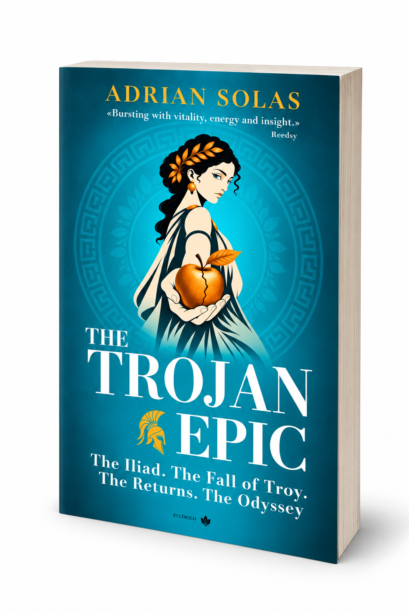

✦ A STUDIOLO COMPANION
The Trojan Epic
Interactive Atlas
Three maps. One extraordinary story.
Explore the places, people and journeys of the Trojan Epic.
01 — 03THE WORLD OF THE TROJAN EPIC
AN INTERACTIVE COMPANION ✦ FOR CURIOUS MINDS
THE COLLECTION / 01—03
Choose your map.
From the shores of Troy to the long journey home, discover the epic one place at a time.

Every map has a story.
Where will you begin?